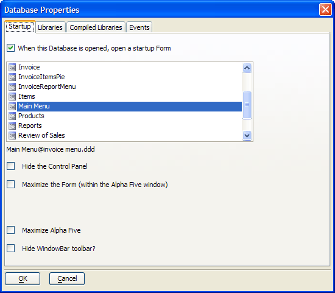

Displaying the Main Menu
When you open the Invoice database, Alpha Anywhere automatically displays the main menu. Main Menu is a form based on the Invoice Menu table. You can specify that a particular form in the database is automatically opened when the database is opened with the following procedure.
Procedure: Specify the Startup Form
Activate the Control Panel .
In the File menu select Database properties.
In the resulting Database Properties dialog box, check the When this database is opened, open a startup form check box.
Select the startup form you wish to use.
Click the OK button.

 Note : The designer
did not use the Hide the Control Panel option
because it would lock you out of the Control Panel,
which is not the point of this sample, but could be appropriate for your
application.
Note : The designer
did not use the Hide the Control Panel option
because it would lock you out of the Control Panel,
which is not the point of this sample, but could be appropriate for your
application.
Separating the Code from the Event
The recommended approach to building user interfaces in Alpha Anywhere is to separate the OnPush or OnChange event from the code. Having the code run under a script or function makes it easier to both debug and to maintain an evolving application. Button1 displays this architecture. It's OnPush event calls an Action Script that has a single action: "Run a script". This action runs an Action Script named "invoice_form" that has a single action: "Open Form or Browse Layout". This action opens the Invoice form.
There are two benefits to this design:
The script that actually opens the Invoice form is separate from the Main Menu form, meaning that it is reusable.
Because the invoice_form script is separate from the Main Menu form, the developer can create and debug it without editing the Main Menu form. This makes the developer more productive in the Alpha Anywhere environment.
See Also
Creating the Navigation Toolbar, Displaying the Navigation Toolbar, Ending the AlphaSports Application, Starting the AlphaSports Application, The Main Menu Form